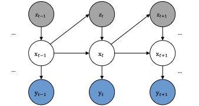
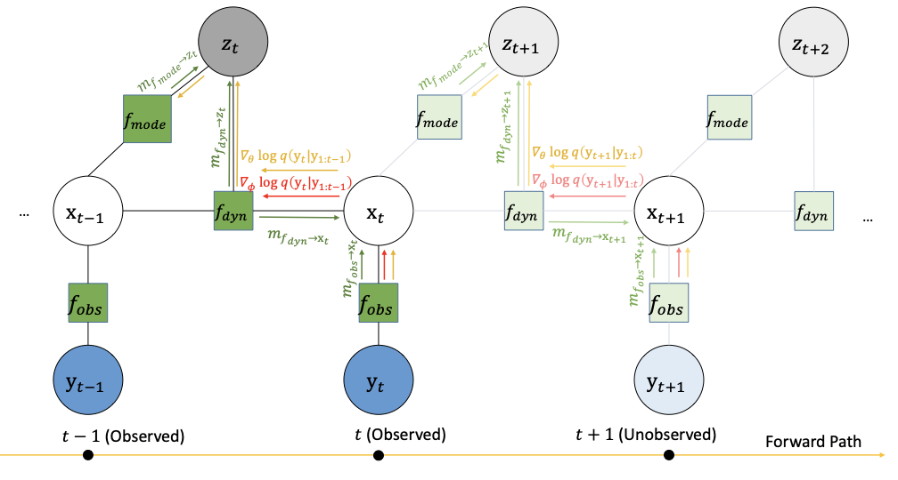
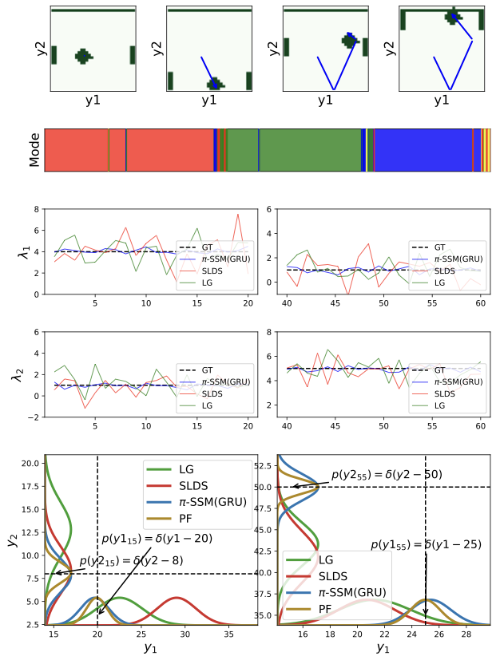
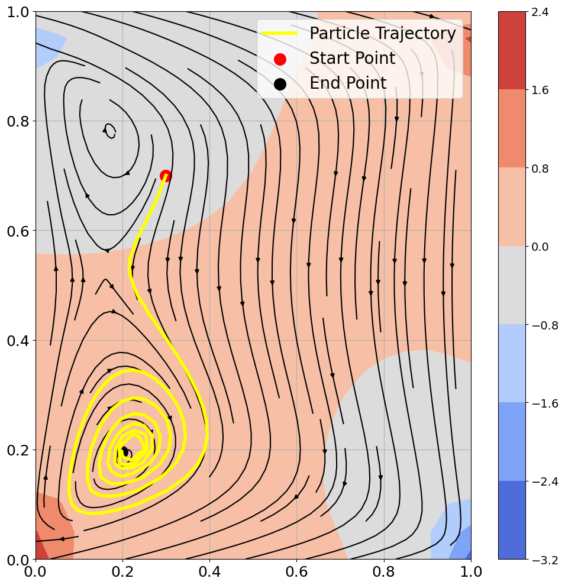
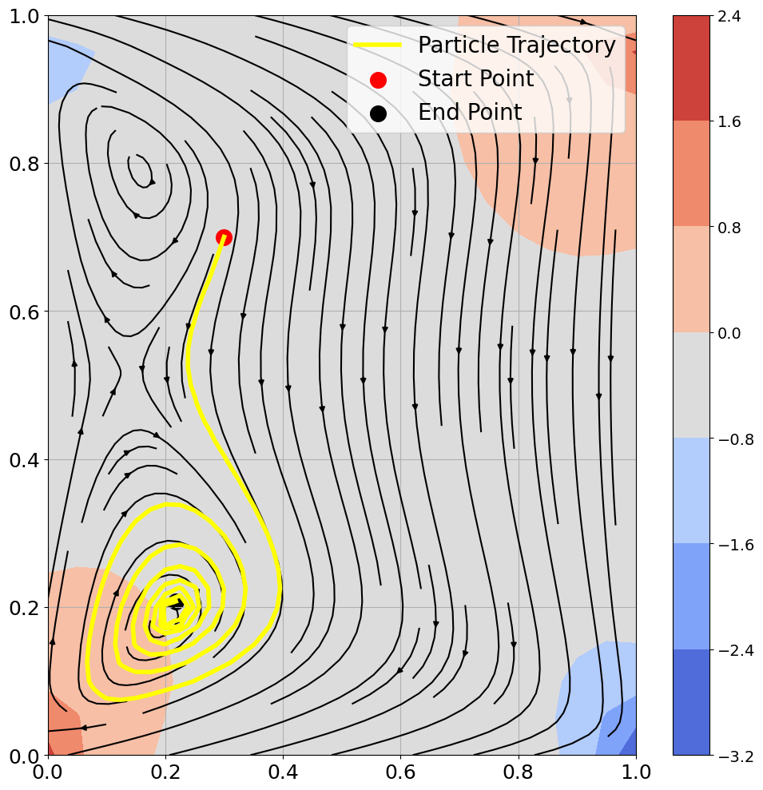
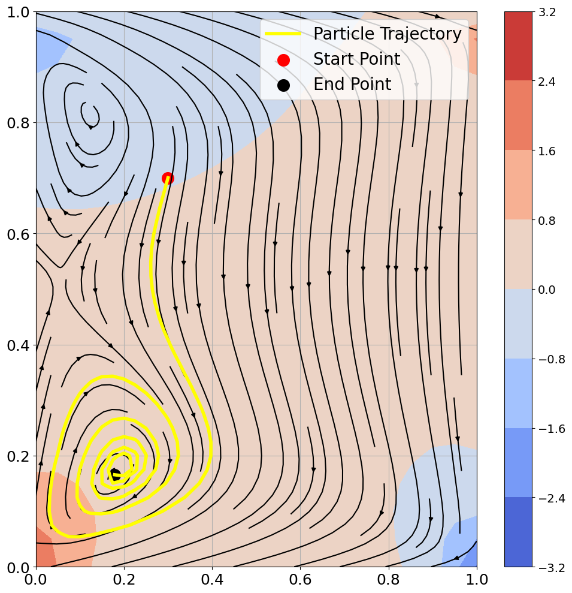
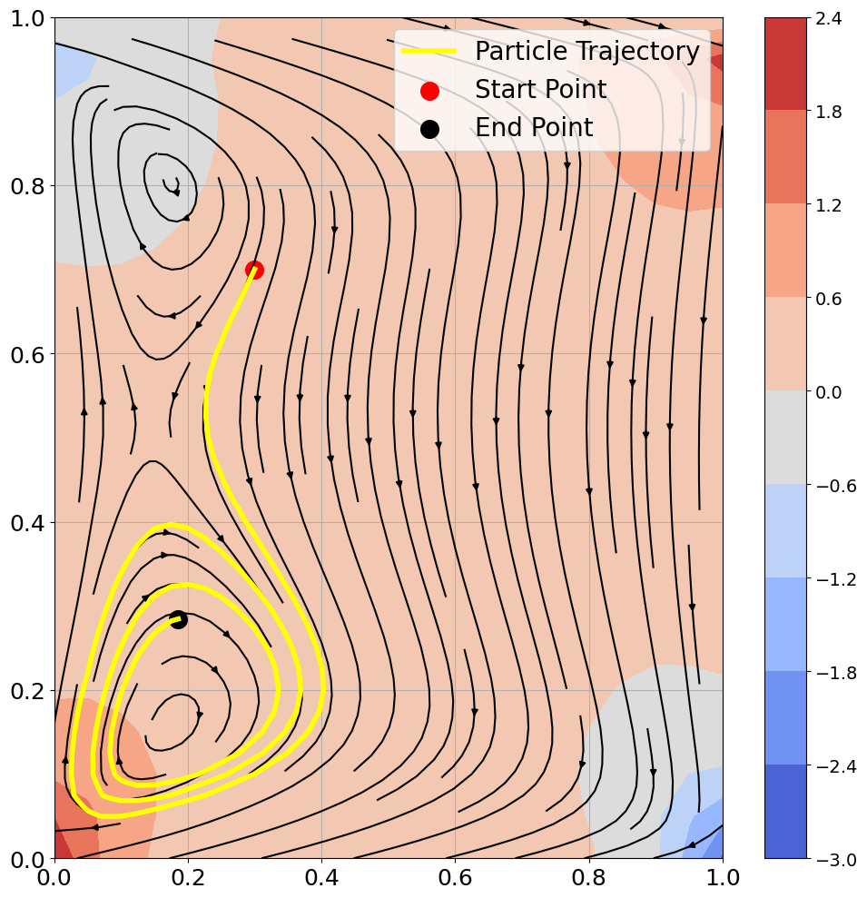

Structured Temporal Inference in Hybrid State-Space Models
Introduction

Real-world temporal systems are often hybrid: they evolve smoothly most of the time, then switch regimes under discrete events. Classical SLDS-style methods are principled but often require explicit Markov edges in the discrete chain and can become expensive when inference needs global sequence-level updates. Pi-SSM is designed to keep the useful structure of state-space inference while allowing local, state-conditioned mode selection.
The central modeling choice is to infer the mode directly from the latent trajectory signal, using $q(z_t \mid \mathbf{x}_{t-1})$. This avoids forcing a hard coded transition prior of the form $p(z_t \mid z_{t-1})$, and enables online operation in which each step is updated with local information rather than global backward passes.
To preserve numerical structure, Pi-SSM keeps a Kalman-like update template for the continuous posterior but uses a learned, positive-definite surrogate for the inversion-like component. This provides flexibility without abandoning filtering algebra.
Model Factorization

We model trajectories with continuous latent states $\mathbf{x}_{1:T}$, discrete modes $z_{1:T}$, and observations $\mathbf{y}_{1:T}$. The joint distribution is factorized as
This state-dependent discrete factorization is the key structural difference relative to Markov-mode SLDS.
At each step, the filtered approximation is represented as
This decomposition supports local updates in time while retaining a probabilistic interpretation for both state and mode variables.
Nested Inference and Updates
Continuous updates follow a pseudo-Kalman form with a learned gain parameterization:
The gain keeps the structure of filtering while replacing unstable inverse terms with a learned PSD factor.
A compact message-passing approximation for beliefs can be summarized as
For training, we optimize predictive likelihood terms with local discrete-variable gradients. One practical objective is a rolling negative log-likelihood:
Empirical Behavior

In Pong, regime changes align with contact events and are visible in both learned discrete assignments and transition-spectrum shifts. The state-conditioned mode predictor captures these transitions without explicit $p(z_t\mid z_{t-1})$ persistence terms.
Across tasks, we observe three consistent behaviors:
- Reliable tracking under hybrid continuous-discrete dynamics.
- Stable recursive updates from the learned gain factorization.
- Practical online inference without full-sequence backtracking.



